← Index · ← Previous · Next →
Authors: Kaushlendra Kumar
Type: theory · Category: strongly correlated electrons · PDF: https://arxiv.org/pdf/2608.22384v1
Analysis basis: full PDF text, analyzed in chunks
Topic relevance: quantum measurements 3/5 · analog quantum simulation 2/5
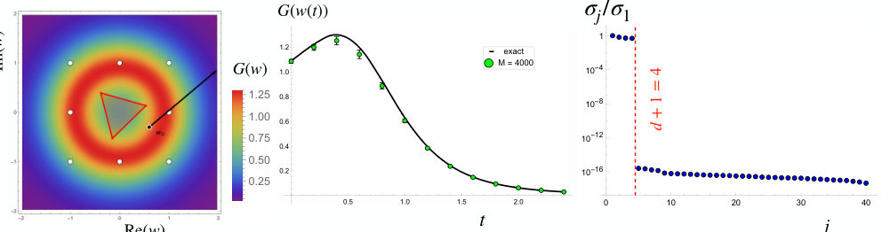
Summary. This work demonstrates that the complex quantum geometry of lattice Laughlin quasihole states can be fully determined from measuring the occupation probability distribution at just one reference point. By exploiting the known analytic structure of the state amplitudes, the authors reconstruct the quantum metric and Berry curvature, showing that single-shot measurements are surprisingly powerful tools for characterizing quantum geometry.
Why it may be interesting. It provides a powerful, non-standard method to extract full geometric information (metric, curvature) from minimal quantum measurements, which is highly relevant for characterizing complex many-body ground states.
Main problem. The central problem is determining complex quantum geometric properties, such as the quantum metric and Berry curvature, using only a single probability distribution measurement (snapshot) from a lattice Laughlin quasihole state.
Main result. A single snapshot measurement is sufficient to reconstruct the complete complex Gram kernel, thereby fixing the quantum metric and Berry curvature of the state family.
Method. The reconstruction relies on a single-reference kernel identity, using the known analytic quasihole factor and the measured occupation probability $P_0(n)$ to determine the overlap kernel $K(w, v)$.
Model / system. The system is modeled by lattice Laughlin quasihole states, parameterized by the quasihole position $w$, whose amplitudes factorize based on the occupation configuration $n$.
Key observables. Quantum metric coefficient $G(w)$, Berry curvature $\Omega_{xy}$, Overlap Kernel $K(w, v)$, and the Connes distance $d_\Lambda$.
Important parameters / regimes. The reconstruction is limited by the Rényi-2 divergence $D_2(P_w\|P_0)$ and the local single-copy multiparameter information bound.
Assumptions / limitations. The reconstruction critically depends on the known analytic structure of the quasihole factor $f_n(w)$ and assumes the reference point $w_0$ is generic.
Figures summary. Figure 1 illustrates the reconstruction of the scalar metric coefficient $G(w)$ both analytically and numerically, alongside the singular values of the state matrix.
Paper structure. The paper develops a kernel identity from the single snapshot measurement, uses this identity to derive geometric quantities like the metric and distance, and finally analyzes the statistical limitations using divergence measures.
Can a probability distribution measured in one basis determine complex quantum geometry? The answer is affirmative for a lattice Laughlin quasihole. The exact occupation law at one generic reference position, together with the known analytic quasihole factor, fixes the complete complex Gram kernel. A finite snapshot ensemble estimates this kernel without preparing another member of the family, and thereby determines finite-distance overlaps, Bargmann phases, the quantum metric, and the Berry curvature. The same analytic structure confines the family to an exact projective subspace whose dimension grows at most linearly with particle number. Exact enumeration of a Nielsen-Cirac-Sierra state demonstrates finite-shot reconstruction of both the metric and a geometric phase. Moreover, a Rényi-2 divergence sets the statistical range of the reconstruction while, at nondegenerate points, occupation readout also attains the local single-copy multiparameter information bound.
Authors: Ziqing Guo, Viraj Dsouza, Alex Khan, Abhishek Chopra, Rut Lineswala, Ziwen Pan
Type: both · Category: quantum information and computing · PDF: https://arxiv.org/pdf/2608.21647v1
Analysis basis: full PDF text, analyzed in chunks
Topic relevance: quantum measurements 3/5 · analog quantum simulation 1/5 · methods for driven-dissipative 1/5
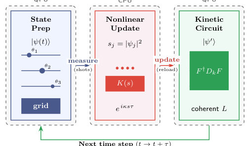
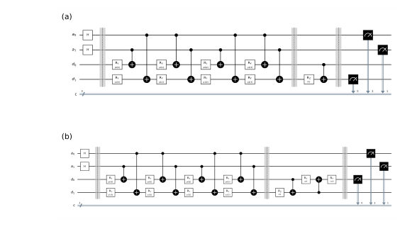
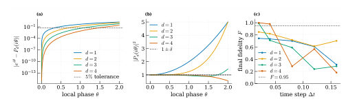
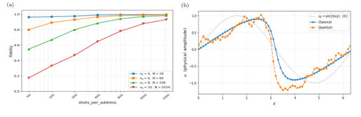
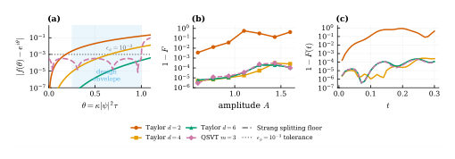
Summary. This work analyzes the resource costs of simulating nonlinear waves like the NLSE using quantum processors via a hybrid measurement-update-reload scheme. The authors demonstrate that the constant need to measure and reload the field state causes the quantum computational cost to scale worse than classical methods. Consequently, they identify achieving a coherent, measurement-free nonlinear update as the critical goal for realizing quantum advantage in this domain.
Why it may be interesting. It provides a rigorous, resource-aware analysis of the limitations of current quantum simulation schemes for nonlinear dynamics, setting a clear, quantitative benchmark (measurement-free evolution) for future hardware development.
Main problem. The paper addresses the high computational cost associated with simulating nonlinear wave equations on quantum processors due to the necessity of repeatedly measuring and reloading the field state.
Main result. The quantum cost per step, dominated by measurement and reload overhead, scales poorly with grid size, showing no end-to-end advantage over classical methods at fixed precision.
Method. A hybrid split-step solver is proposed, which alternates between quantum evolution (linear steps) and classical updates (nonlinear kicks), with the field state being measured and reloaded at every time step.
Model / system. The primary models are nonlinear partial differential equations (PDEs), such as the Nonlinear Schrödinger Equation (NLSE) and the Burgers' equation. The quantum encoding maps an N-point field onto log_2(N) qubits.
Key observables. Overlap fidelity (F), phase-factor error, total step latency (T_step), and the ratio of quantum to classical work ($W_Q/W_{cl}$).
Important parameters / regimes. The resource budget is controlled by the timestep ($\Delta t$), polynomial degree ($d$), and shot count ($S$). The quantum cost scales as $O(N^2/\epsilon^2)$ due to readout requirements.
Assumptions / limitations. The analysis assumes that the measurement and reload costs dominate the overall computational work, and the PolyKick approximation is only accurate when the local nonlinear phase is small.
Figures summary. Figures illustrate the measure-update-reload cycle, fidelity diagnostics showing error sources, and resource comparisons demonstrating the scaling mismatch between quantum and classical work.
Paper structure. The paper introduces the hybrid solver, develops a comprehensive cost model accounting for shots and gates, validates the kernels on hardware, compares the resource scaling against classical FFT-based methods, and concludes by identifying the measurement-free update as the necessary target for quantum advantage.
Quantum processors encode an N-point field in log_2(N) qubits, which renders nonlinear wave equations an important application for quantum simulation. Nonlinear evolution, however, requires the field values themselves, and these are not directly accessible without quantum measurement. Existing algorithms circumvent this measurement through linear embeddings and state copies, thereby obscuring its cost within the truncation order, the auxiliary dimensions, and the state preparation. In order to expose this cost, a hybrid split-step solver is proposed in which the field is measured, updated classically, and reloaded at every step, with all shots and gates accounted for in a single cost-and-error model. Since the entire field is available at every step, a property unavailable to linear approximations in strongly nonlinear regimes, the design of the solver reduces to a budgeting problem over the timestep, the polynomial degree, and the shot count. The coherent kernels of the solver are validated on superconducting hardware. An identical structure and bottleneck govern the viscous Burgers' equation in one and two dimensions. Because every step reads the full field, the quantum cost per step, measured as circuit depth multiplied by measurement shots, exceeds the classical cost with increasing grid size. The framework consequently identifies a coherent, measurement-free nonlinear update as the quantitative target that any end-to-end advantage must meet.
Authors: M. Wong, K. Thompson, M. Governale, J. Brand, U. Zuelicke
Type: theory · Category: quantum gases · PDF: https://arxiv.org/pdf/2608.21917v1
Analysis basis: full PDF text, analyzed in chunks
Topic relevance: analog quantum simulation 3/5 · Keldysh / 2PI / non-Gaussian methods 2/5
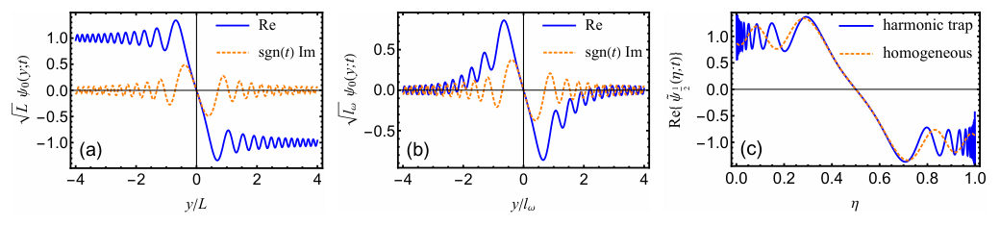
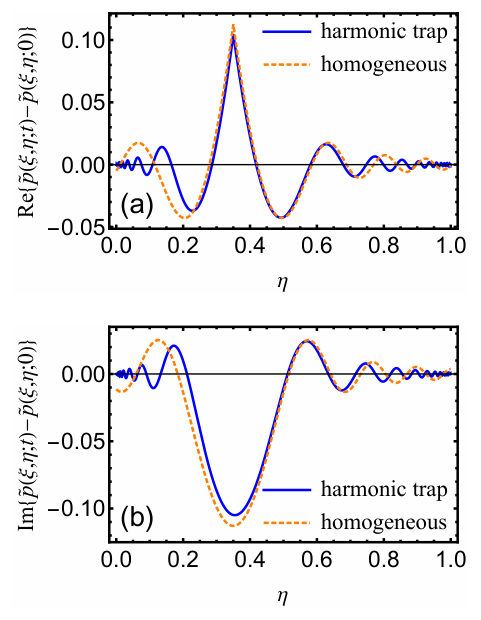
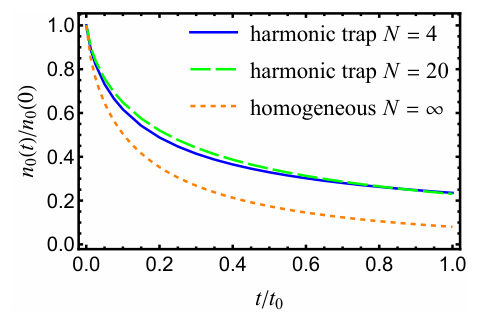
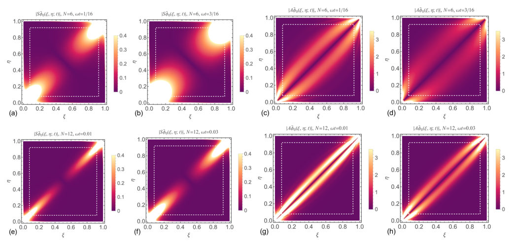
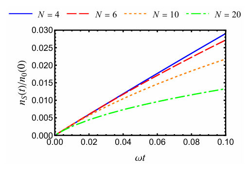
Summary. This theoretical study examines the fermionic Tonks-Girardeau gas, an exactly solvable model for strongly interacting fermions. The authors demonstrate the presence of unconventional odd-frequency pairing, which is a boundary-localized, mesoscopic phenomenon. They achieve this by generalizing ODLRO theory to analyze the time-dependent two-body correlation matrix.
Why it may be interesting. This work directly addresses advanced topics in strongly correlated quantum gases, specifically exploring unconventional pairing symmetries (odd-frequency) beyond standard BCS theory, which is highly relevant to modern AMO research.
Main problem. The paper investigates the existence and nature of unconventional odd-frequency pair correlations within the fermionic Tonks-Girardeau (FTG) gas.
Main result. Odd-frequency pairing is predicted to exist in the trapped FTG gas, but it is a mesoscopic effect localized at the system's boundary and nonextensive thermodynamically.
Method. The analysis generalizes Yang's theory of Off-Diagonal Long-Range Order (ODLRO) by using the Time-Dependent Two-Body Correlation Matrix ($ ho_2$) and its time-ordered counterpart ($ ho_T^2$).
Model / system. The system is the fermionic Tonks-Girardeau (FTG) gas, an exactly solvable model known to exhibit conventional p-wave Cooper pairing, which is then analyzed under the influence of a trapping potential.
Key observables. The order parameter $\phi_T^0(x, y; t)$ and the macroscopic eigenvalue $n_0(t)$ derived from the T2bCM are key diagnostics for superfluidity and pairing.
Important parameters / regimes. Fixed particle number ($N$), finite time delay ($t$), and the trapping potential $V(x)$ (harmonic or square-well).
Assumptions / limitations. The analysis relies on the Off-Diagonal Long-Range Approximation (ODLRO) and the use of the Time-Dependent Two-Body Correlation Matrix formalism.
Figures summary. Figures illustrate the spatial dependence of wave functions and the time evolution of the macroscopic eigenvalue $n_0(t)$ for various particle numbers and potentials, alongside scaling plots for the odd-frequency pairing magnitude.
Paper structure. The work progresses by establishing the theoretical framework using the T2bCM, deriving the macroscopic eigenvalue $n_0(t)$ via ODLRO, and finally applying this formalism to calculate and analyze the signature of odd-frequency pairing in the trapped FTG gas.
The fermionic Tonks-Girardeau gas is an exactly solvable model realizing a conventional macroscopic condensate of p-wave Cooper pairs. Here we demonstrate that, when confined by a trapping potential, it also hosts unconventional odd-frequency pairing, i.e., pair correlations with s-wave symmetry that are only present with a finite time delay t between fermions forming a pair. Quantitative results for fixed particle number are obtained using a generalization of Yang's theory of off-diagonal long-range order to define a t-dependent order parameter that is antisymmetric under combined t inversion and exchange of fermion-pair indices. Odd-frequency pairing in the fermionic Tonks-Girardeau gas is found to be a mesoscopic effect, localized at the system's boundary and therefore nonextensive thermodynamically. Our results show that this elusive hidden order is accessible in systems having fixed particle number, suggesting new avenues towards its experimental realization and further detailed study.
Authors: Henri P. N. Morin, Alex Maierean, Brendon L. Higgins, Ian DSouza, Vinodh R. R. Muthu, Thomas Jennewein
Type: theory · Category: quantum information and computing · PDF: https://arxiv.org/pdf/2608.21968v1
Analysis basis: full PDF text, analyzed in chunks
Topic relevance: methods for driven-dissipative 3/5 · Full counting statistics 1/5 · quantum measurements 1/5
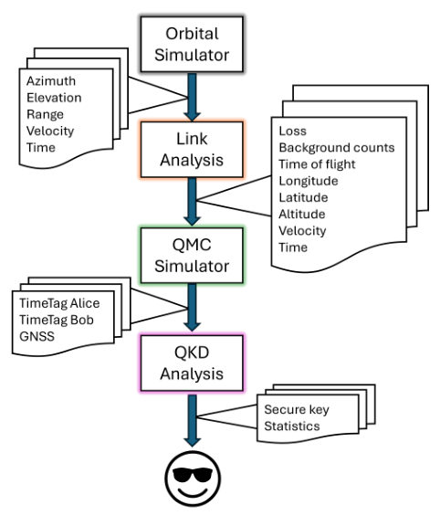
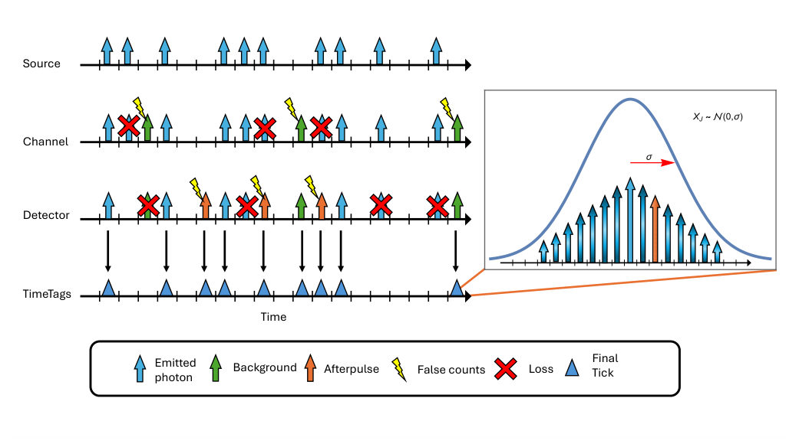
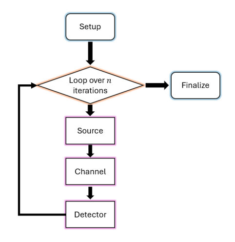
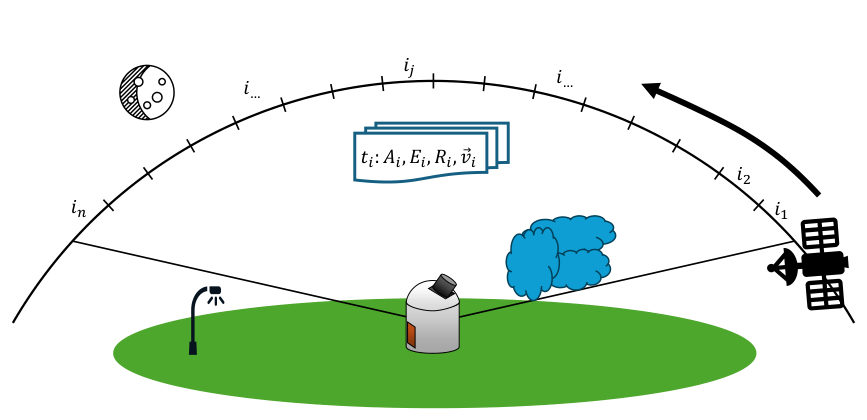
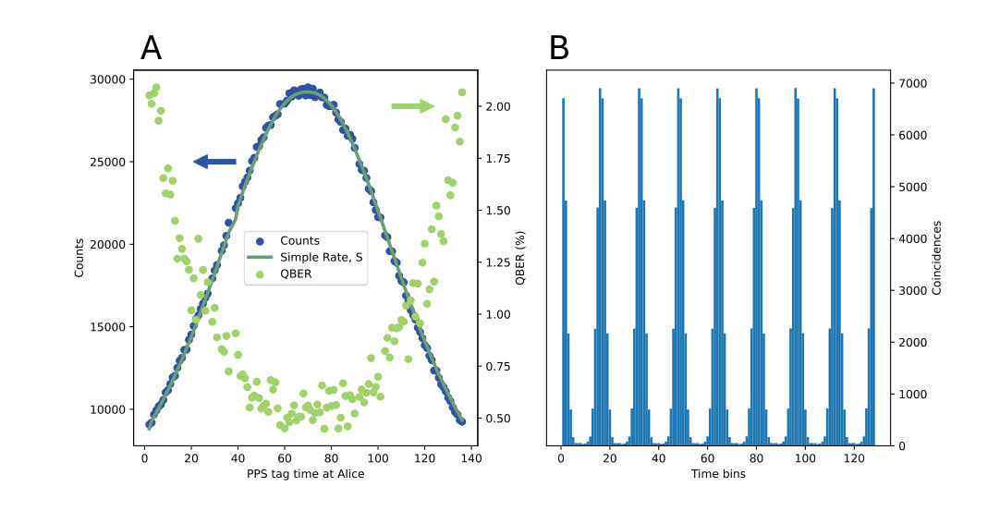
Summary. This paper presents a novel Monte Carlo simulator designed as a digital twin for the QEYSSat satellite quantum link. It accurately models all physical impairments—from source jitter and atmospheric turbulence to detector afterpulsing—in a probabilistic framework. This tool allows researchers to predict the achievable secure key rate, providing a crucial validation baseline for future space-based quantum communication missions.
Why it may be interesting. This work is highly relevant as it applies advanced simulation techniques to model open quantum systems (photon propagation) in a complex, noisy environment (space channel), directly impacting the feasibility and security analysis of quantum communication.
Main problem. Simulating quantum key distribution (QKD) over space links requires high-fidelity models because simple analytical approximations compromise the provable security of the key.
Main result. The authors introduce a comprehensive Monte Carlo simulator that serves as a digital twin for the QEYSSat mission, capable of predicting secure key lengths under realistic physical conditions.
Method. A novel Monte Carlo simulation framework is developed to probabilistically model every physical interaction a photon undergoes from emission through transmission and detection.
Model / system. The system is the Quantum Encryption and Science Satellite (QEYSSat) quantum link. The simulator models the entire chain: Source (using Poisson statistics), Channel (accounting for atmospheric effects, loss, and turbulence), and Detector (incorporating memory effects like afterpulsing).
Key observables. Secure key length, Quantum Bit Error Rate (QBER), and detailed photon count data (timetags).
Important parameters / regimes. Link loss (potentially $> 35 ext{ dB}$), detector deadtime, afterpulsing probability, and atmospheric parameters (e.g., from MODTRAN).
Assumptions / limitations. The simulation simplifies state tracking by using a 'state palette' instead of tracking full density matrices, and it assumes the primary loss mechanism is channel attenuation.
Figures summary. Figures illustrate the full software stack (digital twin), the simulation chain (Source $ ightarrow$ Channel $ ightarrow$ Detector $ ightarrow$ TimeTags), and the main iterative process of the simulator.
Paper structure. The paper details the necessity of high-fidelity simulation, introduces the QMCS methodology covering source, channel, and detector modules, demonstrates its application to QEYSSat links (including Eve's attack), and discusses its utility as a predictive digital twin for mission validation.
Simulations of physical systems require high-fidelity models to accurately represent reality. Simple models may be analytically tractable, but may not be sufficiently representative of reality for the given application. The cost of this simplicity is accuracy, or in the case of quantum key distribution, provable security. Sources of this accuracy gap include the difficulty of modelling physical effects which do not lend themselves well to analytical descriptions, such as afterpulsing. Here, we introduce a novel Monte Carlo based photon emission, transmission, and detection simulator, designed in the context of the Quantum Encryption and Science Satellite (QEYSSat) mission. Within this simulator, every major physical effect a photon may experience during an experiment, from emission to detection, can be accounted for in a probabilistic manner. This methodology allows for the inclusion of experimental parameters which are relevant for a satellite mission, and their impacts on secure key lengths. This simulator serves as a comprehensive baseline to predict and validate experimental data for the upcoming QEYSSat mission.
Authors: Tomasz Szołdra, Peter Schmelcher
Type: theory · Category: numerical methods · PDF: https://arxiv.org/pdf/2608.21902v1
Analysis basis: full PDF text, analyzed in chunks
Topic relevance: methods for driven-dissipative 3/5 · analog quantum simulation 1/5
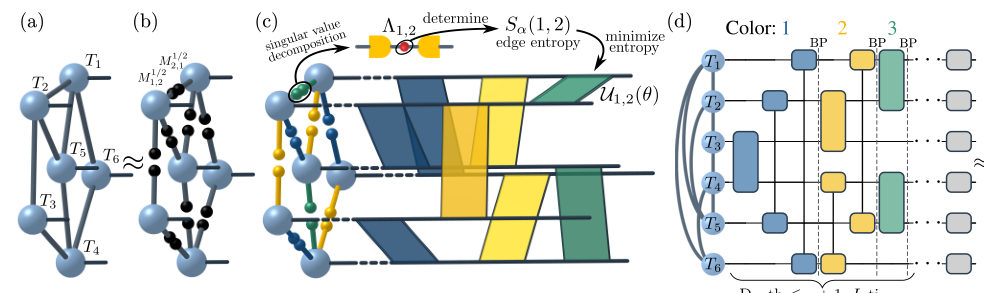
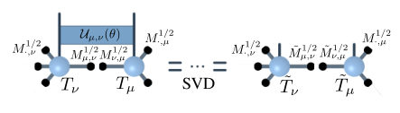
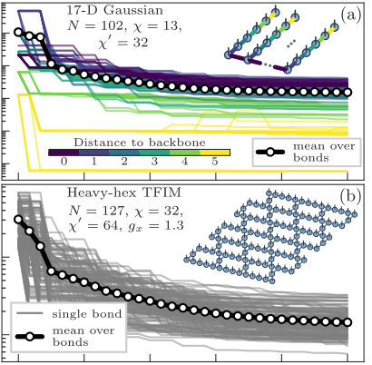
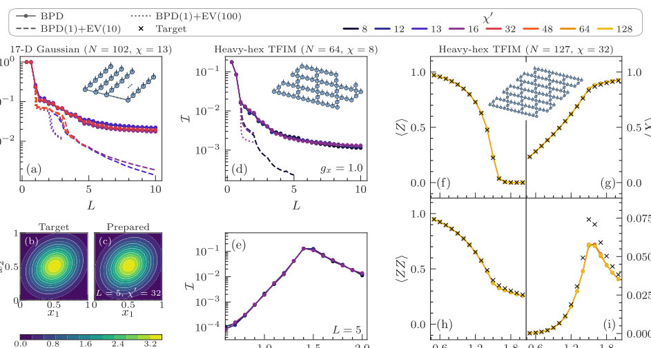
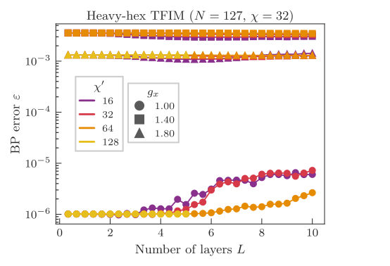
Summary. This paper introduces a Belief Propagation-based Disentangler (BPD) to synthesize quantum circuits for preparing complex Tensor Network states. By iteratively minimizing local edge entropy using nearest-neighbor gates, the method efficiently prepares states like TFIM ground states and Gaussian wavefunctions. This work significantly advances the transfer of classical tensor network physics onto quantum hardware.
Why it may be interesting. It provides a scalable, hardware-agnostic protocol to map classically tractable quantum states (like those from BP) onto quantum circuits, which is crucial for near-term quantum simulation.
Main problem. Developing a quantum circuit synthesis method to prepare complex Tensor Network (TN) states for quantum simulation.
Main result. The Belief Propagation-based Disentangler (BPD) successfully prepares target states like Gaussian distributions and TFIM ground states on large lattices with high fidelity using only a few layers of local gates.
Method. The method reduces state preparation to a sequence of classical, local variational optimizations by applying nearest-neighbor 'disentangler' gates that minimize edge entropy, avoiding barren plateaus.
Model / system. The method targets quantum many-body states represented by Tensor Networks (TN), specifically those tractable via Belief Propagation (BP) approximations on graphs, including loopy lattices.
Key observables. Edge 2-Rényi Entropy, Fidelity ($F$), $\langle Z angle$, $\langle X angle$, and $\langle ZZ angle$ for the TFIM.
Important parameters / regimes. Bond dimension ($\chi$), number of disentangling layers ($L$), and the graph structure (e.g., heavy-hex lattice).
Assumptions / limitations. The method relies on the BP approximation for loopy graphs and assumes the optimization landscape is free of barren plateaus.
Figures summary. Figures illustrate the BPD process, showing entropy reduction across layers for both Gaussian and TFIM targets, and comparing resulting observables against established benchmarks like DMRG.
Paper structure. The paper details the BPD algorithm, its application to preparing Gaussian states and TFIM ground states, and analyzes the convergence and stability of the process by monitoring entropy and observables across increasing bond dimensions.
We develop a quantum circuit synthesis method for preparing a class of tensor network states. The scheme applies to states tractable with belief propagation (BP), a tensor network gauging scheme which recently allowed for classical simulations at large scales. The problem is reduced to independent, strictly local, classical variational optimizations: each nearest-neighbor two-qubit "disentangler" gate minimizes the entropy defined on an edge. Disentanglers drive the state to a product state and their Hermitian conjugate prepares the target. Each disentangling layer has depth at most $z+1$ (with $z$ the maximal number of nearest neighbors per site), the optimization has no barren plateaus, and the bond dimension stays bounded. As a demonstration, with only $3$-$5$ disentangling layers we prepare a $102$-qubit tree tensor network encoding a $17$-dimensional normal distribution and the transverse-field Ising model ground states on a $64$- to $127$-qubit heavy-hex lattice with fidelities of order $0.9-0.999$. The method opens new possibilities for quantum applications by transferring classical tensor network states onto hardware.
Authors: Thuwaragesh Jayachandran, Wai-Keong Mok
Type: theory · Category: statistical mechanics · PDF: https://arxiv.org/pdf/2608.22158v1
Analysis basis: full PDF text, analyzed in chunks
Topic relevance: quantum measurements 3/5 · scars & prethermalization 1/5
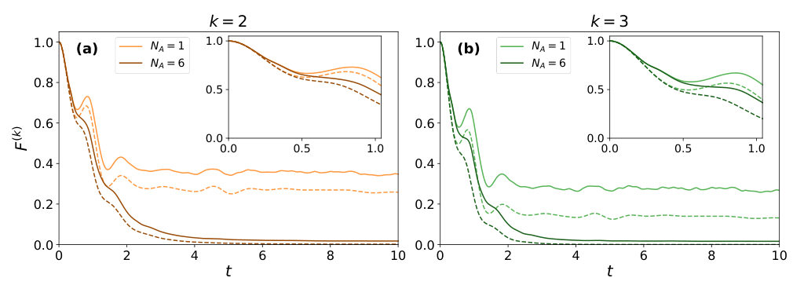
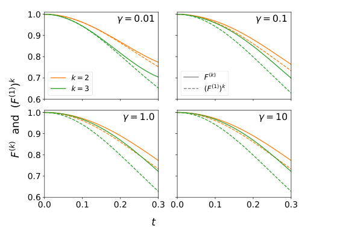
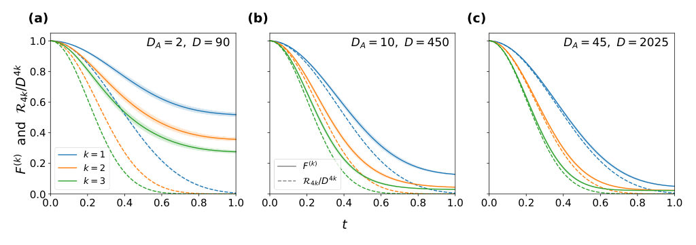
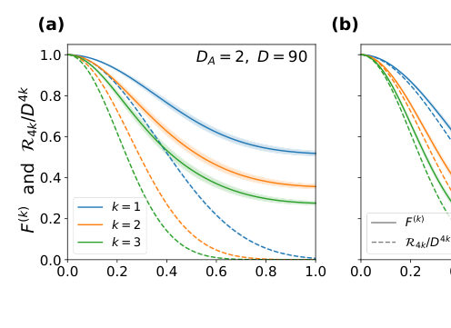
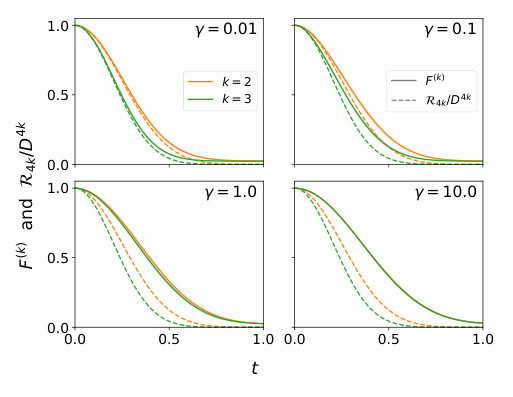
Summary. This theoretical paper analyzes how randomness builds up in quantum systems when a subsystem is measured, a process known as projected ensemble dynamics. It proves that the initial rate of this randomness growth is dictated solely by the initial bipartite entanglement between the measured and unmeasured parts of the system. This establishes entanglement as the primary mechanism controlling the onset of local quantum scrambling.
Why it may be interesting. This work provides a rigorous, quantitative link between entanglement measures (bipartite entanglement) and the initial rate of local information scrambling, which is fundamental to understanding thermalization dynamics in many-body quantum systems.
Main problem. The paper investigates the mechanism governing the initial growth of randomness in projected quantum ensembles, contrasting this initial dynamics with the later emergence of universal pure-state statistics (deep thermalization).
Main result. The initial growth of local randomness in projected ensembles is governed entirely by the bipartite entanglement between the unmeasured subsystem and its complement, setting the initial timescale independently of the measurement basis.
Method. The analysis quantifies randomness using 'frame potentials' ($F^{(k)}(t)$) and employs time-series expansions (Taylor expansion) to analyze the short-time dynamics of projected states.
Model / system. The study considers a bipartite quantum system AB, initially in a product state, where subsystem B undergoes measurement, projecting the state onto an ensemble on subsystem A. The dynamics are governed by a general Hamiltonian $H$.
Key observables. Frame potentials ($F^{(k)}(t)$), subsystem purity ($F^{(1)}(t)$), and the entanglement timescale ($ ext{T}_{ ext{ent}}$).
Important parameters / regimes. The order of the frame potential ($k$), time ($t$), and the entanglement timescale ($ ext{T}_{ ext{ent}}$).
Assumptions / limitations. The initial bath state must have full support in the measurement basis for the leading-order results to hold; the analysis focuses strictly on the early-time regime.
Figures summary. Figures illustrate early-time approximations of $F^{(k)}(t)$ for specific models (like the 1D mixed-field Ising model) and compare these results to theoretical predictions derived from spectral form factors.
Paper structure. The paper develops the formalism for frame potentials, derives the early-time expansion for $F^{(k)}(t)$ based on the initial product state, and extends the analysis to unitarily invariant Hamiltonian ensembles, establishing a connection to spectral form factors.
Deep thermalization concerns the emergence of universal pure-state statistics in projected ensembles at late times, yet the mechanism governing the initial growth of randomness remains unclear. Here, we study the short-time dynamics of projected ensembles generated from initially unentangled states, quantifying their randomness using frame potentials. For arbitrary Hamiltonians, provided the initial bath state has full support in the measurement basis, we show that the frame potentials to cubic order in time are determined entirely by the subsystem purity, and hence by the bipartite entanglement generated between the unmeasured subsystem and its complement. The entanglement timescale therefore sets the initial timescale for the growth of local randomness, independently of the bath measurement basis. For unitarily invariant Hamiltonian ensembles, we further relate the projected-ensemble frame potential at order $k$ to the $4k$-point spectral form factor, or equivalently to the $2k$th frame potential of the global unitary dynamics, establishing a direct connection between local and global randomness. Our results identify entanglement as the mechanism governing the onset of randomness in projected ensembles and clarify how local randomness emerges from global quantum dynamics.
Authors: Gunnar F Lange
Type: both · Category: other · PDF: https://arxiv.org/pdf/2608.22511v1
Analysis basis: full PDF text, analyzed in chunks
Topic relevance: quantum measurements 3/5 · analog quantum simulation 1/5
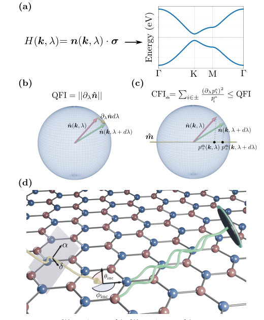
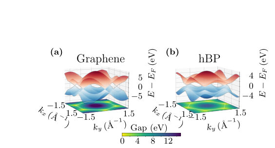
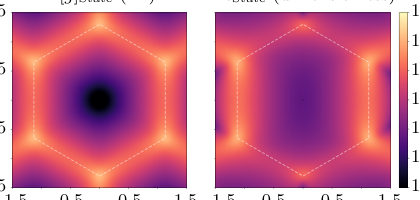
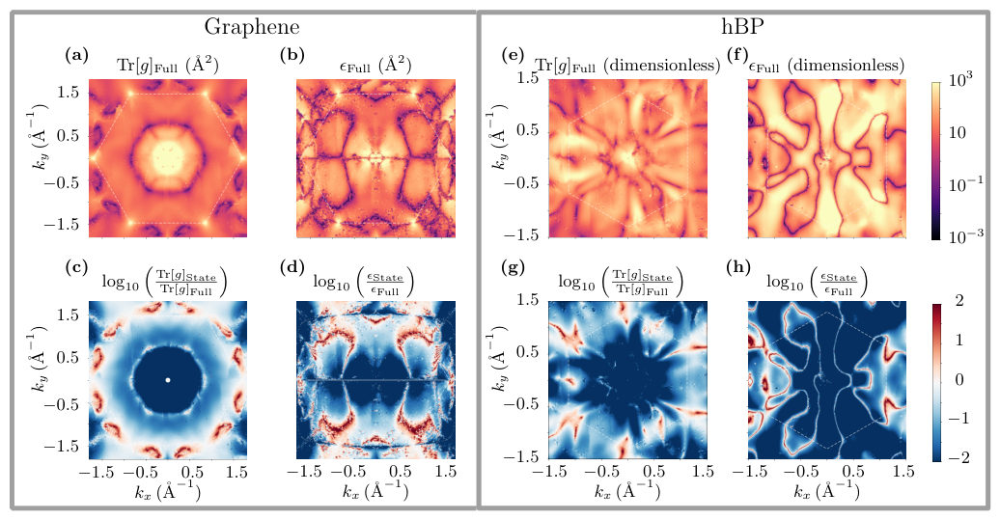
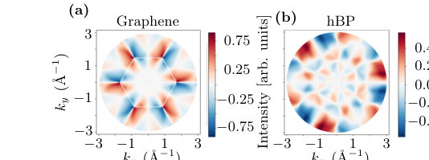
Summary. This paper presents a novel theoretical and experimental scheme to measure the Quantum Fisher Information (QFI) in two-band solid state systems using Angle-Resolved Photoemission Spectroscopy (ARPES). By relating the QFI to the Classical Fisher Information derived from Pauli measurements, the authors provide a pathway to probe fundamental quantum properties, such as the quantum metric or strain response, using tunable light polarization and incidence angles.
Why it may be interesting. This work bridges fundamental quantum information theory (QFI) with cutting-edge experimental condensed matter spectroscopy (ARPES). The ability to map a theoretical quantum metric onto a measurable optical observable is highly relevant for quantum sensing applications in solid-state physics.
Main problem. The paper addresses the challenge of estimating the Quantum Fisher Information (QFI) for a quantum state in a general two-band solid state system using Angle-Resolved Photoemission Spectroscopy (ARPES). It seeks to establish a measurable link between the theoretical QFI and experimentally accessible quantities.
Main result. The authors propose a detailed experimental scheme that relates the QFI to the Classical Fisher Information (CFI) derived from Pauli measurements, which can be measured by tuning ARPES incidence angles and light polarization.
Method. The methodology involves deriving the CFI from the measured photoemission intensity, which is proportional to a Pauli measurement observable. This requires advanced reconstruction techniques using multiple polarization measurements (e.g., EDAC code) to determine the necessary polarization vectors.
Model / system. The study focuses on general two-band solid state systems, exemplified by 2D materials like graphene and hexagonal boron phosphide (hBP). The physics is described using a Bloch Hamiltonian and analyzed via ARPES measurements of the photoemission intensity.
Key observables. Quantum Fisher Information (QFI), Classical Fisher Information (CFI), Quantum Metric, ARPES intensity $I(E, \mathbf{k}_f, \omega)$, and the dichroism coefficient (CDAC).
Important parameters / regimes. System parameters ($\lambda$) such as strain, incidence angles ($ heta_{ ext{inc}}, \phi_{ ext{inc}}$), and light polarization ($\alpha, \delta$).
Assumptions / limitations. The analysis assumes rapid photoionization and approximates the final state as a scattered wave. Furthermore, the optimal measurement basis requires careful selection of polarization vectors to satisfy specific symmetry conditions.
Figures summary. Figures illustrate the conceptual flow from Hamiltonian to QFI to CFI to ARPES measurement. Later figures show the numerically calculated optimal polarization angles required to measure the QFI response to strain or other parameters for graphene and hBP.
Paper structure. The paper first establishes the theoretical link between QFI and measurable CFI via Pauli measurements. It then details the experimental implementation using ARPES, involving the reconstruction of orbital matrix elements from multiple polarization measurements. Finally, it applies this framework to calculate the QFI response to external perturbations like strain for graphene and hBP.
The Quantum Fisher information is frequently studied in the fields of quantum sensing and quantum metrology, as it specifies the sensitivity of a sensor through the Crámer-Rao bound, and in condensed matter physics where it relates to the quantum metric. Measuring the quantum Fisher information is therefore of significant current interest. In this work, we propose a scheme for measuring the quantum Fisher information with respect to any parameter in a general two-band solid state system using angle-resolved photoemission spectroscopy with carefully tuned incidence angles and light polarization. We investigate conditions under which this can be related back to information about the ground state of the material itself changing with system parameters.
Authors: Sonu Verma, Sangmo Cheon, Myung-Joong Hwang, Moon Jip Park
Type: theory · Category: other · PDF: https://arxiv.org/pdf/2608.23380v1
Analysis basis: full PDF text, analyzed in chunks
Topic relevance: analog quantum simulation 3/5 · Keldysh / 2PI / non-Gaussian methods 1/5
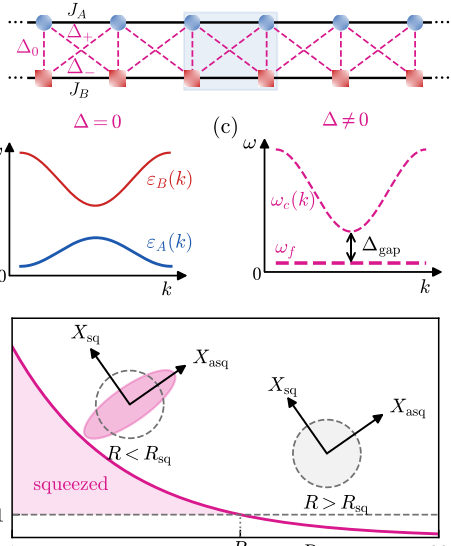
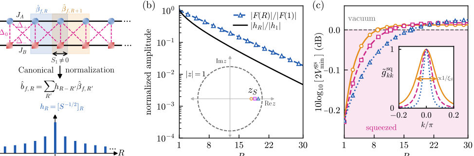
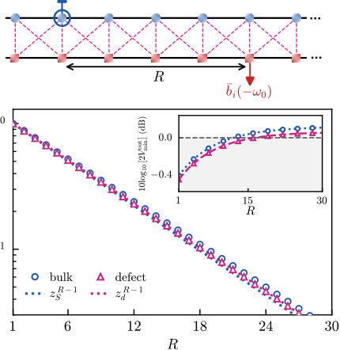
Summary. The authors demonstrate that engineered flat bands in bosonic lattices enable long-range quantum correlations and squeezing, bypassing limitations imposed by dispersive wave propagation. They introduce an intrinsic quantum-geometric length scale ($\xi_S$), determined by a complex-momentum singularity, which governs the decay of these non-classical resources. This provides a powerful theoretical tool for controlling quantum resources in condensed matter systems.
Why it may be interesting. This work provides a deep theoretical link between the spectral geometry (flat bands) of interacting bosonic systems and the spatial extent of non-classical quantum resources like squeezing, which is highly relevant for quantum simulation and quantum optics.
Main problem. The paper addresses how to achieve and quantify long-distance, phase-sensitive quantum correlations and sub-vacuum squeezing in bosonic lattices without relying on standard dispersive propagation mechanisms.
Main result. Parametric pairing can create an exactly flat Bogoliubov band, defining an intrinsic quantum-geometric length scale ($\xi_S$) that controls the spatial range of squeezing and anomalous correlations.
Method. The analysis involves constructing canonical Bogoliubov modes from compact generators and quantifying squeezing using the squeezing-sector symplectic quantum metric, linking the scale to a complex-momentum singularity.
Model / system. The system is a one-dimensional bosonic lattice modeled using Bogoliubov theory, specifically utilizing parametric pairing ($\Delta(k)$) to engineer an exactly flat band ($\omega_f$) within the spectrum.
Key observables. Anomalous correlation $F(R)$, sub-vacuum squeezing depth $D_{ ext{out}}(R)$, and the intrinsic quantum-geometric length scale $\xi_S$.
Important parameters / regimes. The flat band frequency ($\omega_f$), the complex-momentum singularity location ($z_S$), and the weak-damping limit.
Assumptions / limitations. The analysis relies on the existence of an exactly flat band and, in some analyses, assumes the weak-linewidth and narrow-filter limit for pole structure analysis.
Figures summary. Figures illustrate the lattice setup showing the flat band, the mechanism involving compact generators, and the relationship between the correlation decay length and the momentum-space width defined by $\xi_S$.
Paper structure. The paper progresses from establishing the physical model (flat band via pairing) to deriving the mathematical structure (canonical modes, symplectic metric) and finally quantifying the resulting physical resource (squeezing range and length scale $\xi_S$) through various diagnostic tools.
Multimode squeezing is a key resource for continuous-variable quantum technologies, but its spatial range in bosonic lattices is usually tied to dispersive propagation. Here we show that parametric pairing can create an exactly flat Bogoliubov band spanned by compact Bogoliubov generators, while producing phase-sensitive anomalous correlations and sub-vacuum collective-mode squeezing that extend far beyond their finite support. Each compact generator mixes annihilation and creation operators, thereby encoding the Bogoliubov squeezing structure, and neighboring translated generators can have nonzero commutator overlap. Enforcing canonical bosonic commutation relations therefore requires spatially extended linear combinations of these translated compact generators, which define the canonical Bogoliubov modes. The squeezing transformation of these modes varies with momentum and is quantified by the squeezing-sector symplectic quantum metric. A complex-momentum singularity of the analytically continued canonical Bogoliubov modes sets both the anomalous-correlation decay length and the momentum-space width of this metric, defining an intrinsic quantum-geometric length scale. This singularity can be tuned continuously while preserving exact flatness, thereby controlling the spatial range of correlations and squeezing. Away from exact flatness, long-distance correlations persist through multiple decay channels, while modes localized by defects and dimerized boundaries provide complementary probes of the underlying quantum geometry. In the weak-damping limit, the same quantum-geometric length scale can be extracted from frequency-filtered two-port correlations. Our results establish the quantum geometry of canonical Bogoliubov modes as a mechanism for spatially extended quantum resources arising from compact Bogoliubov generators.
Authors: Mitikorn Wood-Thanan, Felix Flicker
Type: theory · Category: disordered systems and neural networks · PDF: https://arxiv.org/pdf/2608.21514v1
Analysis basis: full PDF text, analyzed in chunks
Topic relevance: analog quantum simulation 3/5 · methods for driven-dissipative 1/5
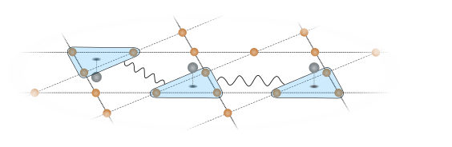
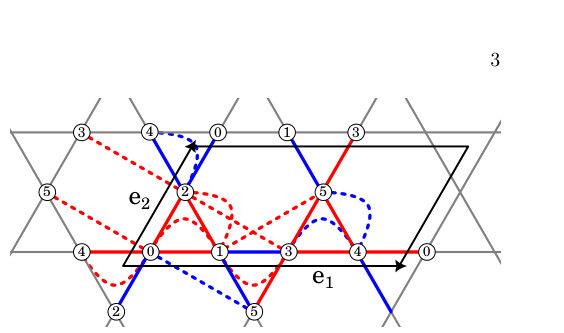
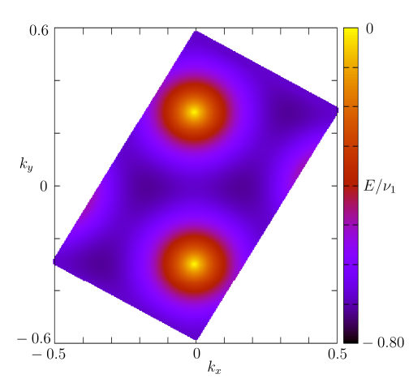
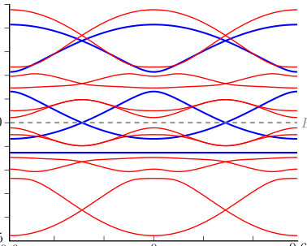
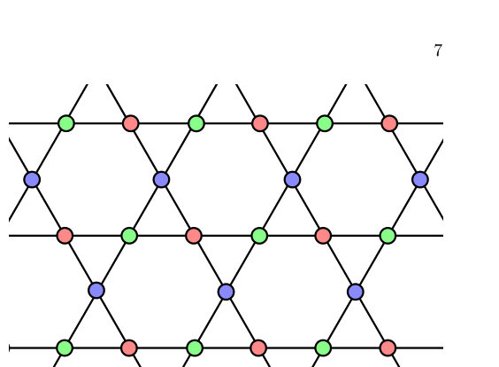
Summary. This theoretical work models the spin glass behavior in Herbertsmithite, where magnetic impurities interact via spinons from the underlying Quantum Spin Liquid (QSL). By comparing predictions from $\text{Z}_2$ and $\text{U}(1)$ QSL models against multiple experimental measurements, the authors propose a definitive neutron scattering test to distinguish between the two candidate QSL ground states.
Why it may be interesting. This work bridges the gap between abstract QSL theory and concrete experimental signatures in frustrated magnets, providing a clear, testable prediction (neutron scattering difference) that guides future experimental efforts.
Main problem. To provide a full theoretical account of the spin glass formation among magnetic impurities (witnesses) in Herbertsmithite, mediated by the Quantum Spin Liquid (QSL) spinons.
Main result. The model successfully captures multiple experimental signatures, and crucially, predicts a qualitative difference in neutron scattering intensities between the $\text{Z}_2$ and $\text{U}(1)$ QSL candidates, offering a definitive test.
Method. The authors developed a theoretical model by deriving an effective witness-witness interaction ($J_{ij}$) from the QSL spinon susceptibility, followed by large-scale classical Monte Carlo simulations.
Model / system. The system is Herbertsmithite, a prototypical Quantum Spin Liquid (QSL) candidate on a kagome lattice. The model treats magnetic impurities ('witnesses') whose interactions are mediated by the underlying QSL spinons, considering both $\text{Z}_2$ and $\text{U}(1)$ QSL ground states.
Key observables. Spin glass formation temperature ($T^*$), magnetic noise ($S(f, T)$), DC magnetic susceptibility ($\chi(T)$), and static neutron scattering structure factor $S(\mathbf{q})$.
Important parameters / regimes. Witness-kagome spin coupling ($\gamma$), temperature ($T$), and witness concentration ($x$).
Assumptions / limitations. Key approximations include treating the witness spins as classical Ising spins and using mean-field theory for the QSL description, neglecting back-action of witnesses on the kagome spins.
Figures summary. Figures illustrate the model setup, showing $\text{Cu}^{2+}$ witnesses randomly occupying $\text{Zn}$ sites, and the theoretical predictions for various experimental observables like susceptibility and neutron scattering structure factor.
Paper structure. The paper establishes the physical problem (spin glass in Herbertsmithite), derives the effective Hamiltonian via QSL susceptibility, applies the model to fit multiple experimental data points, and finally uses the differences between $\text{Z}_2$ and $\text{U}(1)$ predictions to propose a definitive experimental test.
Herbertsmithite is a prototypical candidate quantum spin liquid (QSL), believed to feature a long-range entangled ground state and deconfined fractionalised spinon excitations. Confirmation of these properties has been hindered by the presence of magnetic impurities (spin-1/2 Cu2+ spins substituted onto non-magnetic Zn2+ sites). Recently these impurities were reconceptualised as 'witnesses' of the QSL, inheriting long-range interactions and entanglement mediated by the QSL spinons, leading to spin glass formation amongst witnesses below 260 mK. Here we present a full theoretical account of this idea. Despite having only one free parameter (the witness-kagome spin coupling), our model captures the full range of experimental data, including: the formation of a spin glass amongst witnesses; the frequency and temperature dependence of the magnetic noise; a sharp peak in the DC magnetic susceptibility as a function of temperature; and the static neutron scattering structure factor at 2 K. Both candidate QSLs (Z2 and U(1)) give similar agreement with all data; however, our model predicts a qualitative difference between the Z2 and U(1) neutron scattering intensities below 260 mK, providing a long-sought definitive test to distinguish the two cases. We also predict phase diagrams as a function of temperature and witness concentration, finding a phase transition to different long-range ordered witness states for Z2 and U(1) at high concentration.
Authors: Xinyu Song
Type: theory · Category: quantum information and computing · PDF: https://arxiv.org/pdf/2608.22962v1
Analysis basis: full PDF text, analyzed in chunks
Topic relevance: quantum measurements 3/5
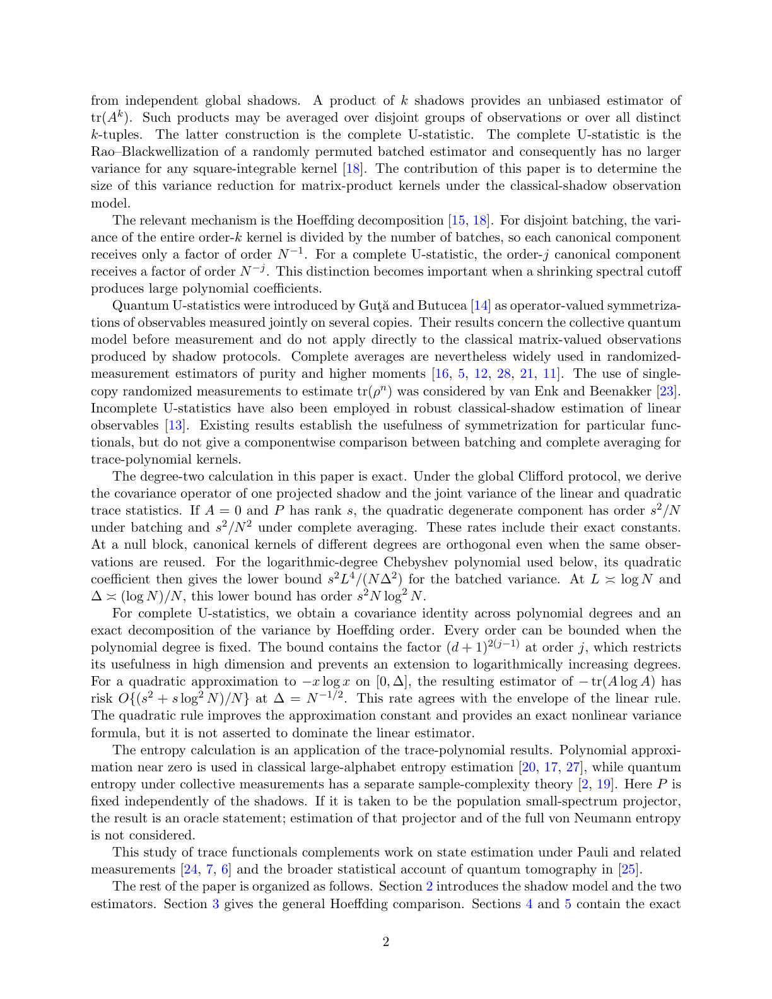
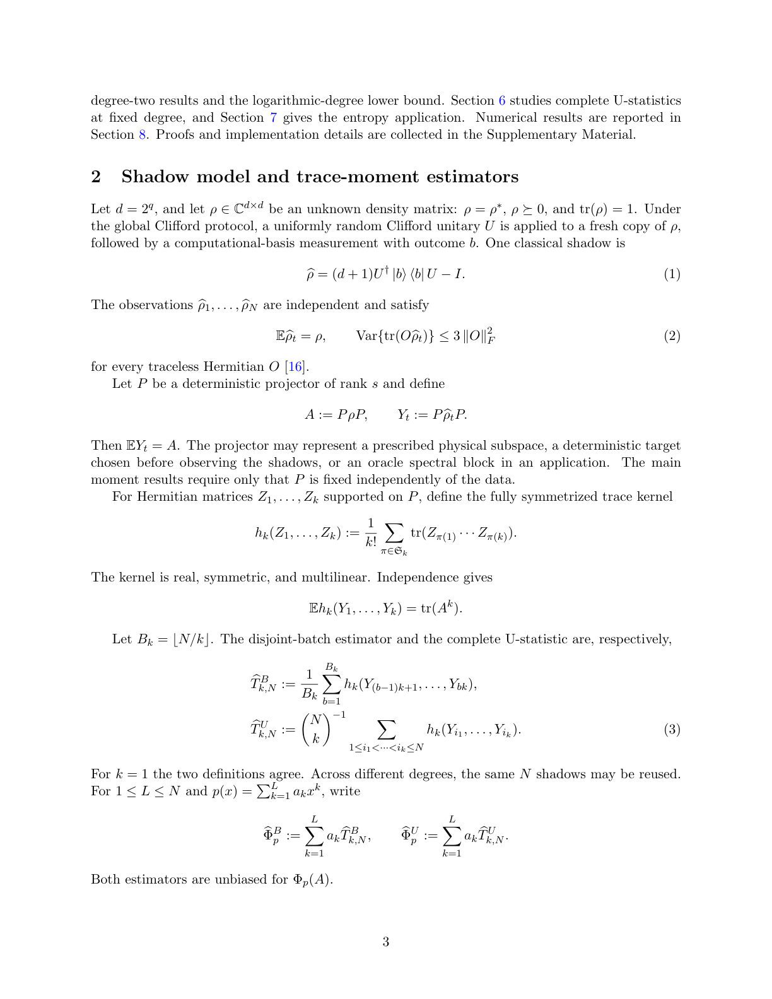
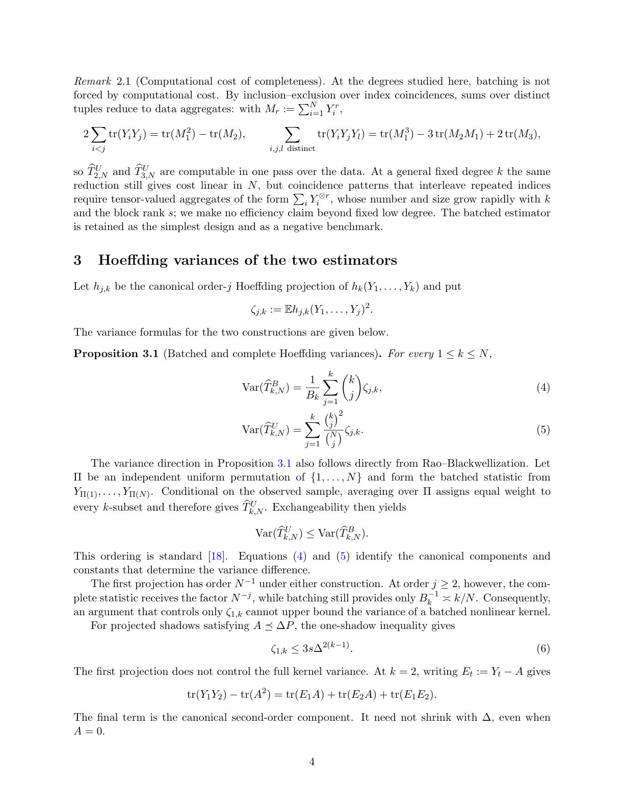
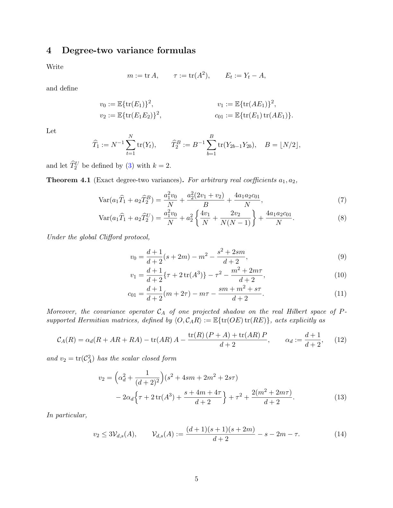
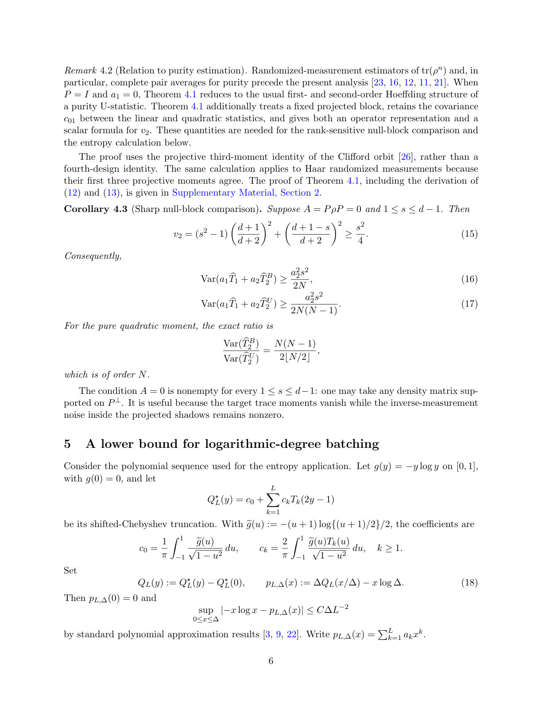
Summary. This paper develops rigorous statistical theory to estimate quantum state properties, specifically trace polynomials, from measurements called classical shadows. It compares two estimation techniques, batching and complete U-statistics, deriving exact variance formulas. The results quantify the statistical advantage of the U-statistic approach, providing improved risk bounds for quantum information tasks like entropy estimation.
Why it may be interesting. This work provides crucial theoretical tools for quantum tomography and quantum state estimation, which are foundational to understanding quantum computation and quantum information processing.
Main problem. The paper addresses the problem of accurately estimating the trace polynomial $ ext{tr } p(P ho P)$ of an unknown quantum state $ ho$ using measurements derived from global classical shadows.
Main result. It rigorously compares the variance scaling of two estimators—disjoint batching and complete U-statistics—showing that the complete U-statistic provides superior variance reduction for certain terms.
Method. The analysis employs advanced statistical tools, including the Hoeffding decomposition and the derivation of exact variance and covariance identities for U-statistics, applied to quantum measurement statistics.
Model / system. The system involves estimating the density matrix $ ho$ via classical shadows generated using random Clifford unitaries. The analysis is highly mathematical, focusing on the statistical properties of these estimators rather than a specific physical Hamiltonian.
Key observables. The primary observables are the estimators $\hat{b}_T^B$ and $\hat{b}_T^U$, and the associated variance and risk bounds for trace moments and entropy functionals.
Important parameters / regimes. Key parameters include the rank $s$ of the projector $P$, the sample size $N$, and the polynomial degree $L$. The comparison hinges on the scaling of variance with $N$ (e.g., $1/N$ vs $1/N^2$).
Assumptions / limitations. The analysis relies on the global Clifford protocol and assumes that the projector $P$ is fixed independently of the measurement data. Higher-order bounds are limited to polynomial dependence on dimension.
Figures summary. The notes mention Monte Carlo experiments confirming degree-two variance formulas for both Clifford and Haar ensembles, and exact calculations illustrating entropy risks.
Paper structure. The paper builds from deriving exact degree-two variance formulas (Theorem 4.1) for linear and quadratic terms, extends this to general polynomial estimators using complete U-statistics (Theorems 6.1/6.2), and concludes with deriving and bounding the risk for entropy functionals (Corollaries 7.1/7.2).
We study estimation of the trace polynomial $\operatorname{tr} p(PρP)$ from global classical shadows, where $ρ$ is an unknown quantum state and $P$ is a fixed projector. Disjoint batching and complete U-statistics yield unbiased estimators of the same trace moments, but assign different sample-size factors to the degenerate terms in their Hoeffding decompositions. Under the global Clifford protocol, exact degree-two variance formulas show that, on a null projected block of rank $s$, the quadratic degenerate term has order $s^2/N$ under batching and $s^2/N^2$ under complete symmetrization. For a logarithmic-degree polynomial used in entropy approximation, the quadratic coefficient raises the batched variance to at least order $s^2N\log^2N$ at the classical entropy cutoff. For complete U-statistics, we derive a cross-degree covariance identity and an exact variance decomposition for polynomial estimators. We also bound every Hoeffding order at a fixed degree and obtain a growing-dimensional risk bound for a small-spectrum entropy functional. The higher-order bounds retain a polynomial dependence on the ambient dimension and therefore do not cover logarithmically increasing degrees. Monte Carlo experiments confirm the degree-two formulas, and exact calculations illustrate the entropy risks.
Authors: Wenxuan Tao, Jianan Wang, Fen Zuo
Type: theory · Category: strongly correlated electrons · PDF: https://arxiv.org/pdf/2608.22892v1
Analysis basis: full PDF text, analyzed in chunks
Topic relevance: analog quantum simulation 3/5
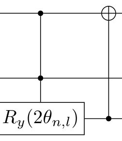
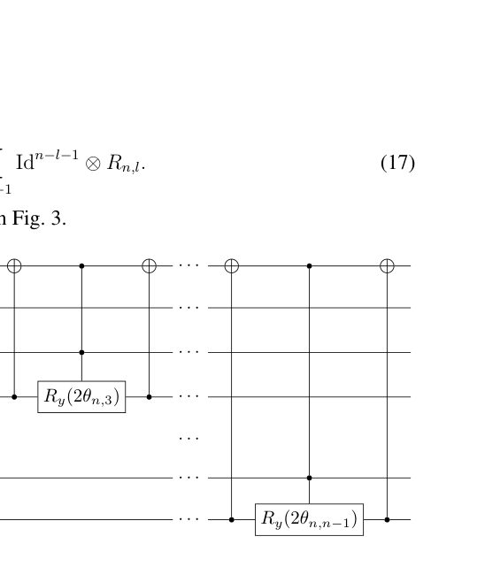
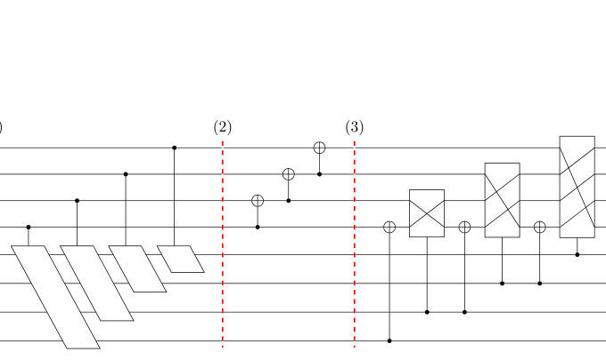
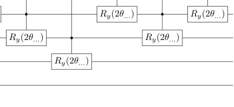
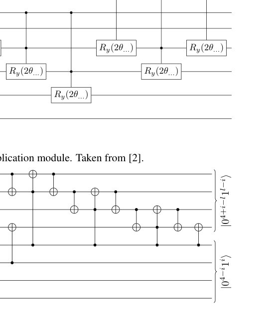
Summary. This work develops a general quantum circuit protocol to deterministically prepare any arbitrary spin eigenstate, extending previous methods designed for simpler Dicke states. By mapping the state structure onto a branching diagram, the authors derive recursive unitary operators based on coupling coefficients. This provides a powerful tool for simulating complex quantum many-body systems relevant to condensed matter physics.
Why it may be interesting. The ability to deterministically prepare complex, highly entangled spin states is foundational for simulating quantum many-body physics, which is central to strongly correlated electron systems.
Main problem. The paper addresses the challenge of deterministically preparing arbitrary spin eigenfunctions, generalizing known efficient preparation methods for simpler states like Dicke states.
Main result. The authors successfully generalize the preparation techniques using a branching diagram approach, constructing the required unitary operators as products of sequential coupling gates.
Method. The methodology involves translating techniques from established state preparation algorithms (like WDB and SCS) into a general framework characterized by branching paths and binary spin trees.
Model / system. The system involves coupled spin-1/2 particles whose total spin eigenfunctions are the focus. The states are characterized by total spin quantum numbers and branching path symbols.
Key observables. Spin state amplitudes, total spin quantum numbers (S, Sz), and the structure of the branching diagram.
Important parameters / regimes. The number of spins ($n$), the target total spin ($S$), and the specific coupling coefficients derived from Clebsch-Gordan theory.
Assumptions / limitations. The construction relies on recursive relations derived from Clebsch-Gordan coefficients and assumes the implementability of the derived controlled rotation gates.
Figures summary. Figures illustrate the circuit diagrams for the WDB and SCS modules, the branching diagram structure for small $n$, and the specific duplication and elimination modules used in the circuit construction.
Paper structure. The paper progresses from reviewing Dicke state preparation (SCS/WDB) to introducing the general framework using branching diagrams. It then derives recursive circuit construction formulas and details the implementation of complex modules like the negative-logic WDB circuit.
Quantum states with conserved total spins, or spin eigenfunctions, are important for studying quantum chemistry and quantum manybody physics problems. A typical class of spin eigenfunctions are Dicke states, which attain maximal spins. While we already have many efficient quantum algorithms to prepare Dicke states, it is not yet clear if we could do so for arbitrary spin eigenfunctions deterministically. Generalizing Bärtschi and Eidenbenz's elegant algorithms for Dicke state preparation, we successfully prepare arbitrary spin eigenfunctions characterized by branching paths and binary spin trees. As a byproduct, we also develop the corresponding classical algorithms to reconstruct all these spin states.
Authors: Jonathan Baxter
Type: theory · Category: other · PDF: https://arxiv.org/pdf/2608.22733v1
Analysis basis: full PDF text, analyzed in chunks
Topic relevance: quantum measurements 3/5
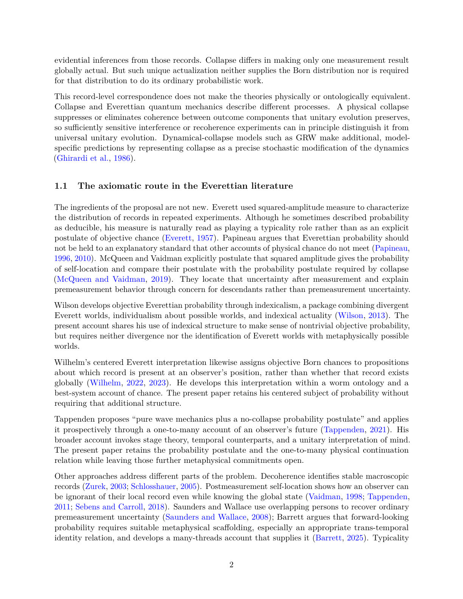
Summary. This paper tackles the measurement problem by arguing that probability must be axiomatically postulated as a measure over an observer's future records, rather than being derived from the global ontology. It demonstrates that this minimal postulate allows the Everettian framework to reproduce the empirical predictions of collapse theories regarding local measurement outcomes. The work thus provides a path to reconcile unitary quantum mechanics with objective probability without requiring a single, unique global history.
Why it may be interesting. This work is highly relevant to open quantum systems and foundations, as it tackles the measurement problem by providing a minimal, axiomatic prescription for probability that remains consistent with unitary evolution at the level of local, recorded information.
Main problem. The paper addresses the fundamental conflict between the unitary, branching nature of Everettian quantum mechanics and the necessity of assigning objective probabilities (Born measure) when all outcomes appear to occur globally.
Main result. The authors argue that objective probability must be postulated prospectively over the records borne by an observer's future continuations, showing that this axiomatic postulate yields the same record-level predictions as collapse theories.
Method. The approach is axiomatic, postulating the normalized Born measure as the objective probability and comparing the predictions of the Everettian law against the collapse law using thought experiments involving delayed revelation.
Model / system. The model compares two interpretations of quantum measurement: the collapse theory (single global outcome) and Everettian quantum mechanics (unitary evolution leading to multiple observer continuations). The analysis uses idealized two-outcome measurements and delayed revelation scenarios.
Key observables. The key observables are the record values borne by the observer's future continuations ($X_E$) versus the unique record in the global post-collapse state ($X_C$).
Important parameters / regimes. The core parameters are the squared amplitudes ($|c_i|^2$) which define the Born probability measure.
Assumptions / limitations. The primary assumption is the axiomatic postulate of the normalized Born measure as the objective probability, which is separated from theories of personal persistence.
Figures summary. The notes describe the comparison of sample spaces ($\Omega_E$ vs $\Omega_C$) and the mathematical derivation showing the equality of the probability distributions ($ ext{Pr}_E = ext{Pr}_C$) for the record variables.
Paper structure. The paper establishes the problem, proposes the axiomatic postulate for probability, demonstrates the equivalence of predictions at the record level using thought experiments, and finally defends this minimal postulate against various philosophical objections regarding selection and unique history.
Everettian quantum mechanics is often said to lack coherent probability because every possible measurement result occurs. If all of them exist globally, what is probability supposed to be a probability of? This paper defends an axiomatic answer: normalized Born measure is postulated as objective probability over the records borne by an observer's future continuations. A collapse law assigns the same probabilities to possible global outcomes. Neither theory derives the probabilities from its ontology. I relate this minimal proposal to earlier axiomatic accounts, separate it from their accompanying theories of personal persistence, and defend it against recent arguments that the axiomatic route cannot succeed. At the level of recorded results, the Everettian law supports the same predictions and empirical inferences as the collapse law, despite the theories' different ontologies.
Authors: Athira Kalavampara Raghunadhan, Matheus Guedes De Andrade, Don Towsley, Indrakshi Dey, Daniel Kilper, Nicola Marchetti
Type: theory · Category: quantum information and computing · PDF: https://arxiv.org/pdf/2608.21692v1
Analysis basis: full PDF text, analyzed in chunks
Topic relevance: quantum measurements 3/5
Summary. This work analyzes Quantum Network Tomography in star networks suffering from imperfect Bell-State Measurements. The authors develop specialized measurement probes to guarantee that all link and noise parameters are uniquely identifiable. They derive theoretical bounds on estimation precision, confirming that the proposed probes maintain stable accuracy even as the network grows.
Why it may be interesting. It provides rigorous theoretical tools (FIM, CRB) to quantify the limits of measurement in complex quantum systems, which is crucial for designing fault-tolerant quantum communication protocols.
Main problem. The paper addresses the challenge of characterizing quantum links in Quantum Network Tomography (QNT) when the Bell-State Measurements (BSMs) used are imperfect.
Main result. By designing specific probe sequences, the authors ensure unique parameter identifiability and show that the estimation precision (CRB) remains stable for individual link parameters even as the network size increases.
Method. The study uses theoretical analysis involving the Fisher Information Matrix (FIM) and Cramér-Rao Bounds (CRB) to quantify estimation precision, alongside constructing specific probe measurements to ensure parameter identifiability.
Model / system. The system is an $n$-node star network where links are modeled as depolarizing channels characterized by a quality parameter $w_k$. Imperfections are introduced via a depolarizing channel affecting the BSMs, parameterized by $b$.
Key observables. Link entanglement quality ($w_k$), BSM noise parameter ($b$), Fisher Information Matrix (FIM), and Mean Squared Error (MSE).
Important parameters / regimes. Network size ($n$), link parameters ($w_k$), BSM imperfection parameter ($b$), and the number of measurement shots ($N$).
Assumptions / limitations. The analysis is limited to the star network topology, and the initial derivations rely on logarithmic transformations which exclude zero values for $w_k$ and $b$.
Figures summary. Figures illustrate probe construction in small networks, show the dependence of CRB on the BSM parameter $b$, and compare empirical MSEs from Monte Carlo simulations against theoretical CRBs as the number of shots increases.
Paper structure. The paper progresses by first identifying the parameter estimation challenges posed by imperfect BSMs, then developing improved probe designs to achieve unique identifiability, and finally deriving the FIM and MLEs to characterize the resulting estimation precision.
We study Quantum Network Tomography (QNT) for end-to-end link-error characterization under imperfect Bell-state measurements (BSMs), where multiplicative coupling between link and measurement parameters makes identifiability non-trivial. For an n-node star network, we design probes that ensure unique identifiability and derive closed-form expressions for the Fisher Information Matrix (FIM) and Maximum Likelihood Estimators (MLEs), and characterize estimation precision through the Cramer-Rao Bound (CRB). The results show that BSM imperfections degrade estimation precision, while the proposed probes maintain nearly stable precision for individual link parameters as the network size increases. Monte Carlo simulations further confirm that the Mean Squared Error (MSE) approaches the CRB with increasing sample size.
Authors: Holger F. Hofmann, Yuki Kodama, Jonte R. Hance
Type: theory · Category: quantum information and computing · PDF: https://arxiv.org/pdf/2608.22850v1
Analysis basis: full PDF text, analyzed in chunks
Topic relevance: interference shaping light 3/5
Summary. This paper shows how to achieve non-local multi-photon interference by implementing a mode swap operation between two separate interferometers. By generating entanglement across these separated locations, the authors demonstrate a non-local Hong-Ou-Mandel effect. This technique is particularly valuable for quantum protocols that require distributing quantum information to distant parties.
Why it may be interesting. This work is highly relevant for quantum optics and quantum information, as it provides a concrete mechanism (mode swapping) to engineer non-local quantum correlations essential for quantum networking and distributed quantum computation.
Main problem. The paper addresses the challenge of implementing and understanding non-local multi-photon interference in quantum optical systems.
Main result. It demonstrates that a mode swap operation can generate entanglement between photons in two spatially separated interferometers, thus realizing a non-local Hong-Ou-Mandel (HOM) effect.
Method. The method involves modeling the system using optical qubits and employing a mode swap operation followed by post-selection to project the state onto a maximally entangled subspace.
Model / system. The physical system is based on optical quantum information using multi-photon interference across two spatially separated interferometers (System A and System B). The analysis uses a four-mode photon number basis to model the state evolution.
Key observables. The key observable is the non-local correlation of photon detections, confirming the non-local HOM effect.
Important parameters / regimes. The analysis is concerned with the coherence properties across spatially separated modes.
Assumptions / limitations. The analysis relies on post-selection ($\hat{\Pi}$) to restrict the outcomes to the desired qubit subspace.
Figures summary. Figure 1 schematically illustrates the basic mode swapping circuit, showing the paths forming the local systems A and B.
Paper structure. The paper progresses from establishing the general importance of multi-photon interference to defining the system using local multi-mode setups, demonstrating how the mode swap generates entanglement, and finally using this entanglement to prove the non-local HOM effect.
Multi-photon interference can be observed using independently generated photons as input. In the most simple case, these photons meet up at a beam splitter, resulting in quantum interference between transmission and reflection of the photons. Here, we show that non-local multi-photon interference can be implemented by using a mode swap operation to generate entanglement between the photons detected in the outputs of two spatially separated interferometers. The spatial separation of the output photons makes this implementation of multi-photon interference particularly suitable for quantum protocols that distribute quantum information to different parties.
Authors: Jasmin Bedow, Nitin Kaushal, Marcel Franz
Type: theory · Category: strongly correlated electrons · PDF: https://arxiv.org/pdf/2608.23442v1
Analysis basis: full PDF text, analyzed in chunks
Topic relevance: analog quantum simulation 3/5
Summary. This paper analyzes an extended Hubbard model on a Lieb lattice to show that electron-electron interactions can spontaneously generate both altermagnetic order and topological gaps. Using Hartree-Fock theory, the authors map out a phase diagram revealing a sequence of correlated insulating and semimetallic states, including a novel TACI phase. This work highlights how strong correlations can mediate the co-existence of magnetism and topology.
Why it may be interesting. The explicit coupling between magnetic order (altermagnetism) and topological invariants (Chern number) in a strongly correlated lattice model provides a rich platform for studying emergent quantum phases beyond standard band theory.
Main problem. The study investigates the simultaneous emergence and co-existence of altermagnetic order and a topological gap in interacting electron systems.
Main result. The authors demonstrate that electron-electron interactions naturally drive the system into a Topological Altermagnetic Correlated Insulator (TACI) phase, characterized by both magnetic and topological order.
Method. The research employs Unrestricted Hartree-Fock theory to self-consistently evaluate order parameters, supplemented by exact diagonalization for confirmation.
Model / system. The physical system modeled is an extended Hubbard model defined on a Lieb lattice, incorporating nearest-neighbor and third-neighbor Coulomb interactions.
Key observables. Altermagnetic order (staggered magnetization), topological order (spin Chern number), and the presence of gapless Dirac cones or insulating gaps.
Important parameters / regimes. Electron fillings of 2 and 4, and interaction strengths ($U, V$) relative to hopping parameters ($t_1, t_2, t_3$).
Assumptions / limitations. The analysis relies on the Hartree-Fock approximation, and it assumes the A sublattice remains non-magnetic.
Figures summary. Figures illustrate the phase diagram mapping the transition between Paramagnetic Metal, Topological Non-Magnetic Insulator (TNM), TACI phase, ALM semimetal, and Mott Insulator as interaction strengths are varied.
Paper structure. The paper systematically maps the phase diagram by increasing interaction strengths, showing a sequence of transitions from a paramagnetic metal to various correlated insulating or semimetallic states.
We study an extended Hubbard model on Lieb lattice at electron filling 2 and 4, and demonstrate that the interactions lead to the simultaneous emergence of altermagnetic order and a topological gap. Using unrestricted Hartree-Fock theory, we evaluate both the altermagnetic and topological order parameters and show that they co-exist with an associated quantum spin Hall effect in a large region of the phase diagram, which we further support using exact diagonalization. Moreover, we demonstrate that inversion-symmetry breaking terms can also mediate second-order topological phases with associated corner modes.
Authors: Farzaneh Hoveyda-Marashi, Xuefei Guo, Caitlin Kengle, Camille Bernal-Choban, Yue Su, Jin Chen, Dipanjan Chaudhuri, Peter Abbamonte
Type: experiment · Category: strongly correlated electrons · PDF: https://arxiv.org/pdf/2608.23492v1
Analysis basis: full PDF text, analyzed in chunks
Topic relevance: Frenkel-Kontorova 3/5
Summary. This work uses momentum-resolved EELS to characterize the charge excitations in 1T-TaS2 as it undergoes a CDW transition. The findings demonstrate that the material's electronic structure evolves significantly across this transition, evidenced by spectral weight redistribution and gap opening. The technique successfully links lattice dynamics measurements with finite-momentum electronic excitations.
Why it may be interesting. The study directly probes the interplay between lattice degrees of freedom (phonons) and electronic correlations (CDW gap opening) in a strongly correlated material, which is a key area of interest for understanding emergent electronic states.
Main problem. The study investigates the low-energy charge excitations within the material 1T-TaS2 across its structural phase transition from a nearly commensurate to a commensurate Charge-Density-Wave (CDW) state.
Main result. The research reveals that the electronic response undergoes a substantial spectral weight redistribution and the opening of an energy gap below the CDW transition, while lattice dynamics (phonons) show temperature-dependent intensity changes.
Method. Momentum-resolved Electron Energy-Loss Spectroscopy (M-EELS) is employed, supplemented by single-crystal x-ray diffraction (XRD) measurements.
Model / system. The physical system is 1T-TaS2, a transition metal dichalcogenide known for its CDW transitions. The analysis involves modeling phonon dispersions using multicomponent fitting techniques and comparing electronic excitations to theoretical predictions.
Key observables. Acoustic and optical phonon energies/dispersions, CDW wave vector ($\phi$) rotation, spectral weight redistribution, and the opening of an energy gap in the electronic response.
Important parameters / regimes. Temperature (especially near the CDW transition temperature, e.g., 183 K), momentum transfer (finite momentum $q$), and energy loss ($\omega$).
Assumptions / limitations. The analysis assumes that M-EELS provides simultaneous access to lattice dynamics and finite-momentum valence band charge excitations, and that the observed gap is related to electron localization in the commensurate phase.
Figures summary. Figures show XRD maps confirming CDW satellite reflections and wave vector rotation; M-EELS momentum maps illustrate the CDW peak shift; and energy-loss spectra detail phonon fits and the gap opening below the transition.
Paper structure. The paper first establishes the structural changes via XRD, then uses M-EELS to map the low-energy excitations, analyzing phonon features in the nearly commensurate phase, tracking changes across the transition, and finally characterizing the electronic gap opening at higher energies.
We use momentum-resolved electron energy-loss spectroscopy (M-EELS) to study the low-energy charge excitations of 1$T$-TaS$_2$ across the nearly commensurate-to-commensurate charge-density-wave (CDW) transition. Single-crystal x-ray diffraction and elastic M-EELS measurements confirm the expected rotation of the CDW wave vector upon entering the commensurate phase. In the nearly commensurate phase, the low-energy M-EELS spectra reveal an acoustic phonon branch and two optical phonon features whose energies and dispersions are broadly consistent with previous calculations and inelastic x-ray measurements. Across the transition, the optical phonon energies remain nearly unchanged, while their spectral intensity develops a pronounced temperature dependence near the CDW ordering wave vector. At higher energies, the finite-momentum charge response undergoes a substantial redistribution of spectral weight below the transition, consistent with the opening of an energy gap. These results demonstrate that M-EELS provides simultaneous access to lattice dynamics and finite-momentum valence band charge excitations in 1$T$-TaS$_2$, revealing their evolution across the commensurate CDW transition.
Authors: Frederik Stalschus, Samuele Pedrielli, Stefan Kühn, Karl Jansen, Kim A. Nicoli, Shinichi Nakajima
Type: theory · Category: quantum information and computing · PDF: https://arxiv.org/pdf/2608.21616v1
Analysis basis: full PDF text, analyzed in chunks
Topic relevance: quantum measurements 3/5
Summary. This paper introduces a novel theory for optimizing measurement locations in Variational Quantum Eigensolvers (VQEs) that use Sequential Minimal Optimization. It argues that tracking the uncertainty of the minimizer, rather than the energy, is key. The resulting Prior-informed Adaptive Shifts (PAS) method dynamically adjusts measurement spacing to maintain optimal performance across different noise regimes.
Why it may be interesting. This work provides a rigorous, theoretically grounded guide for improving the convergence and stability of VQE algorithms by optimizing the measurement strategy itself, which is crucial for near-term quantum hardware.
Main problem. The paper develops a new theory to determine optimal measurement locations for Sequential Minimal Optimization (SMO) methods used in Variational Quantum Eigensolvers (VQEs). It addresses the discrepancy between theoretical optimal measurements and practical performance.
Main result. The optimal measurement locations are not fixed but adaptively shift based on the prior knowledge of the energy minimizer, leading to the proposed Prior-informed Adaptive Shifts (PAS) method.
Method. The authors analyze the variance of the estimator of the minimizer ($\hat{ heta}^*$) rather than the energy estimate ($\hat{f}^*$), deriving closed-form optimal shifts based on prior concentration ($\kappa$).
Model / system. The study focuses on VQEs, which estimate the ground-state energy of a Hamiltonian $H$ by optimizing parameters $ heta$ in a parameterized quantum circuit ansatz $U( heta)$. The optimization uses SMO techniques like Rotosolve.
Key observables. The primary observables are the estimated minimum energy ($\hat{f}^*$) and, critically, the estimated minimizer angle ($\hat{ heta}^*$).
Important parameters / regimes. The key parameters are the measurement spacing ($\alpha$), the prior concentration ($\kappa$), and the shot count (related to noise $\sigma^2$).
Assumptions / limitations. The analysis relies on first-order Taylor expansions for variance propagation and assumes the standard three-measurement procedure (Rotosolve) is used.
Figures summary. Figures compare the expected variance of $\hat{f}^*$ and $\hat{ heta}^*$ versus measurement spacing $\alpha$, validating the theoretical derivations for both energy and minimizer uncertainty.
Paper structure. The paper first critiques previous assumptions, then develops the theory by focusing on minimizing the variance of the minimizer. It derives the optimal shift $\alpha^*$ based on prior knowledge and proposes the adaptive PAS method, validating it numerically.
Sequential minimal optimization methods, such as the Rotosolve and the Nakanishi-Fujii-Todo algorithm (NFT), are widely used for Variational Quantum Eigensolvers (VQEs). These methods optimize one parameter direction at a time, requiring measurements at only a few locations along that direction. In the presence of measurement shot noise, however, their performance depends critically on the choice of measurement locations, and recent studies suggest that equidistant measurements are optimal. However, we often observe that equidistant measurements are not always optimal in practice. We argue that this discrepancy between theory and practice arises from the fact that two assumptions underlying previous analyses do not generally hold: (1) the absence of prior knowledge about the energy minimizer, and (2) the use of the uncertainty of the estimated energy as a proxy for optimization performance. In this paper, we develop a new theory for determining optimal measurement locations. First, we show that incorporating prior information about the minimizer is beneficial. Early in optimization, when little is known about the pivot, i.e., the current minimizer, equidistant measurements are indeed near-optimal, but as the prior belief sharpens the optimal locations move away from equidistant. Second, rather than analyzing the uncertainty of the estimated minimum energy, we study the uncertainty of the estimator of the minimizer itself, which leads to substantially different strategies. Based on this analysis, we propose Prior-informed Adaptive Shifts (PAS), a method that automatically adjusts measurement locations during optimization. Numerical experiments across different shot counts and problems validate our theoretical findings and demonstrate that PAS adaptively recovers whichever fixed shift is best in each regime without it being specified in advance.
Authors: Tasdiqul Islam, Rasman Mubtasim Swargo, Engin Arslan, Md Arifuzzaman
Type: theory · Category: quantum information and computing · PDF: https://arxiv.org/pdf/2608.21667v1
Analysis basis: full PDF text, analyzed in chunks
Topic relevance: quantum measurements 3/5
Summary. This paper introduces a novel Quantum Key Distribution (QKD) protocol that leverages multi-qubit Greenberger–Horne–Zeilinger (GHZ) entanglement to drastically reduce the number of qubits transmitted per key bit. By employing Quantum Non-Demolition (QND) measurements and state resetting, the scheme achieves a high transmitted-qubit efficiency ($\eta=L$). This makes it a resource-efficient and noise-tolerant alternative for bandwidth-limited quantum networks.
Why it may be interesting. The focus on entanglement structure (GHZ states) and measurement techniques (QND) to enhance resource efficiency is highly relevant to developing practical quantum network protocols.
Main problem. Conventional Quantum Key Distribution (QKD) protocols suffer from high overhead, requiring qubit transmission proportional to or exceeding the final key length, which strains limited quantum network resources.
Main result. The proposed GHZ entanglement-based QKD scheme achieves a transmitted-qubit efficiency ($\eta=L$), significantly reducing resource overhead while maintaining high fidelity.
Method. The scheme uses an $(L+1)$-qubit GHZ state, transmits only one qubit, and reuses the entanglement to encode and decode multiple classical key bits via Quantum Non-Demolition (QND) measurements and state resetting.
Model / system. The protocol is modeled using multi-qubit GHZ entangled states and relies on the ability to perform repeated QND measurements and local state resets on the remaining entangled qubits.
Key observables. Raw-key fidelity (100% for $L \le 12$), transmitted-qubit efficiency ($\eta=L$), and CHSH violation for integrity checks.
Important parameters / regimes. Depolarizing noise level ($p \le 0.005$), key length ($L$), and the number of qubits used in the initial GHZ state ($L+1$).
Assumptions / limitations. Assumes authenticated classical communication, local reset verification, and bounded-error QND discrimination.
Figures summary. Figures illustrate the three main steps: GHZ state preparation, single-bit teleportation using BSM, and the subsequent QND measurement followed by the GHZ state reset operation.
Paper structure. The paper first identifies the resource overhead problem in QKD, then details the GHZ-based protocol involving GHZ preparation, single-qubit transmission, and iterative key extraction via QND measurement and state resetting. Security is analyzed against various attacks, and performance is verified via simulation.
Conventional Quantum Key Distribution (QKD) requires the transmission of qubits proportional to or exceeding the length of the key, as protocols such as BB84 transmit more qubits than the final key size due to basis sifting and privacy amplification. Since quantum networks are still in their infancy and have limited capacity, this overhead puts significant pressure on network resources. To address this issue, we propose a Multi-Qubit Greenberger--Horne--Zeilinger (GHZ) State-based QKD scheme that reduces the number of qubits transmitted over the quantum channel. The proposed method transmits one GHZ qubit between endpoints and reuses the resulting entanglement to convey multiple classical key bits with the help of Quantum Non-Demolition (QND) measurements. Under the stated assumptions on authenticated classical communication, local reset verification, and bounded-error QND discrimination, one can transfer $L$ classical bits by generating an (L+1)-qubit GHZ state and transferring one qubit to the remote party. We verify correctness using the NetSquid quantum network simulator: the protocol achieves 100\% raw-key fidelity for keys of length up to 12 bits under both ideal conditions and depolarizing noise up to p = 0.005 per round. We further show that the proposed QKD algorithm can be extended to multi-party QKD and server-client deployment. The proposed scheme offers a transmitted-qubit-efficient, noise-tolerant alternative for bandwidth-limited quantum networks.
Authors: Rongxing Xu, Cuiling Meng
Type: theory · Category: statistical mechanics · PDF: https://arxiv.org/pdf/2608.22934v1
Analysis basis: full PDF text, analyzed in chunks
Topic relevance: correlated / nonlocal dissipation 2/5 · driven-dissipative phase transition 2/5 · non-equilibrium universality 2/5 · Keldysh / 2PI / non-Gaussian methods 1/5 · analog quantum simulation 1/5 · methods for driven-dissipative 1/5
Summary. This paper refines the spectral bounds for Markov cycles by incorporating a coarse-grained kinetic scale derived from the geometric means of forward and backward transition rates. Using complex analysis and Floquet theory, the authors prove that this new kinetic information yields a strictly tighter bound than previously known universal bounds. This advances the understanding of how local rate distributions constrain the long-time dynamics of open quantum systems.
Why it may be interesting. This work provides a powerful, general framework for refining spectral bounds in non-equilibrium statistical mechanics by incorporating local kinetic details into global thermodynamic constraints, which is highly relevant for open quantum systems.
Main problem. To sharpen the thermodynamic spectral bounds for Markov cycles beyond those depending only on cycle affinity and maximum escape rate.
Main result. The authors derive a strictly stronger spectral bound using a single additional kinetic quantity—the geometric means of forward and backward rates—which is only saturated by uniform cycles.
Method. The analysis employs complex-analytic techniques, transforming the eigenvalue problem into a reciprocal Jacobi form and utilizing Floquet theory to derive refined spectral constraints.
Model / system. The system is a continuous-time Markov jump process on a ring of $n$ states, governed by a master equation whose generator $R$ defines the dynamics.
Key observables. Eigenvalues $\lambda$ (specifically $ ext{Im } \lambda > 0$), oscillation frequencies, and the spectral region defined by the bounds.
Important parameters / regimes. Cycle affinity ($A$), geometric means of rates ($G^+, G^-$), and the dimensionless kinetic scale ($\kappa$).
Assumptions / limitations. The analysis focuses on genuinely oscillatory modes and assumes the existence of a coarse-grained kinetic scale that can be incorporated into the bounds.
Figures summary. Figures compare the original nonuniform cycle rates to the product-matched uniform cycle rates, illustrating how the new kinetic factor $\kappa$ localizes and sharpens the spectral bounds compared to the universal affinity-winding bounds.
Paper structure. The paper progresses from identifying the limitations of existing bounds to introducing the geometric mean kinetic scale, deriving the refined spectral bound via complex-analytic methods (Floquet theory/Jacobi forms), and finally demonstrating the strict improvement over previous universal bounds.
Thermodynamic bounds on the spectrum of a Markov cycle depend on the cycle affinity and maximum escape rate, but they ignore how the local transition rates are distributed around the cycle. In this work, we show that a single additional cycle-wide kinetic quantity, the geometric means of forward and backward rates, yields a strictly stronger bound for every nonuniform cycle. By comparing each winding sector of the eigenmode with a product-matched uniform cycle, we bound oscillation frequencies, tighten the admissible spectral region, and show that only uniform cycles can saturate the Uhl-Seifert boundary. Our results show that retaining a coarse-grained kinetic scale can sharpen thermodynamic spectral bounds without requiring knowledge of the full generator. Our method also provides a complex-analytic framework which unifies generator-specific kinetic information with established affinity-winding bounds.
Authors: Sreekanth K Manikandan, Giovanni Volpe
Type: theory · Category: statistical mechanics · PDF: https://arxiv.org/pdf/2608.23394v1
Analysis basis: full PDF text, analyzed in chunks
Topic relevance: Keldysh / 2PI / non-Gaussian methods 2/5 · methods for driven-dissipative 2/5 · quantum measurements 2/5 · driven-dissipative phase transition 1/5 · non-equilibrium universality 1/5
Summary. This paper introduces EquiNET, a novel technique to calculate equilibrium free-energy differences from non-equilibrium work measurements. It overcomes the statistical limitations of traditional fluctuation theorems in highly dissipative systems by estimating entropy production directly from trajectory fluctuations. The method is validated on biomolecular folding, demonstrating accurate $\Delta F$ estimation where conventional methods fail.
Why it may be interesting. This work provides a robust, data-driven methodology for calculating fundamental thermodynamic quantities ($\Delta F$) from noisy, non-equilibrium measurements, which is crucial for analyzing complex dynamics in molecular and condensed matter systems.
Main problem. The primary challenge is accurately determining equilibrium free-energy differences ($\Delta F$) from non-equilibrium work fluctuations, especially in high-dissipation regimes where standard fluctuation theorems fail due to rare event sampling.
Main result. The proposed EquiNET method successfully estimates $\Delta F$ (or provides rigorous lower bounds) by utilizing trajectory fluctuations to estimate entropy production without relying on rare negative entropy production events.
Method. The approach uses a variational optimization procedure derived from the short-time Thermodynamic Uncertainty Relation (TUR) to infer the instantaneous entropy production rate ($\sigma(t)$) from the first two cumulants of a weighted stochastic current.
Model / system. The theory is applied to general $d$-dimensional overdamped systems evolving under time-dependent protocols, validated numerically using biomolecular folding/unfolding simulations (polymer hairpin model).
Key observables. Work ($W$), Entropy Production ($\Delta S_{ ext{tot}}$), Free-energy difference ($\Delta F$), and the instantaneous entropy production rate ($\sigma(t)$).
Important parameters / regimes. High-dissipation regimes, temperature ($T$), and the structure of the time-dependent potential $\lambda(t)$.
Assumptions / limitations. The method exploits the asymptotic behavior of entropy production fluctuations in the short-time limit, allowing the use of only the first two cumulants of the stochastic current.
Figures summary. Figures illustrate the EquiNET framework, showing how integrating the inferred $\sigma(t)$ yields $\langle \Delta S_{ ext{tot}} angle$ and subsequently $\Delta F$, including visualizations for biomolecular folding.
Paper structure. The paper introduces the problem limitation, proposes the EquiNET method based on the TUR, details the variational inference procedure for $\sigma(t)$, and validates the approach using numerical simulations, including a detailed analysis of a polymer folding protocol.
Equilibrium free-energy differences can be measured from nonequilibrium work fluctuations using fluctuation theorems, such as the Jarzynski equality and the Crooks fluctuation theorem. However, these approaches become statistically inefficient in high-dissipation regimes because their convergence requires trajectories with negative entropy production, events that occur exponentially rarely. Here, we demonstrate that repeated measurements of trajectory fluctuations are sufficient to determine entropy production without relying on such rare events, or to determine a lower bound on it when only partial measurements are available. This information then yields exact estimates of free-energy differences, or rigorous bounds. We validate this approach, named EquiNET, with numerical simulations, including one of biomolecular folding and unfolding, showing that it recovers accurate free-energy estimates even in regimes where conventional approaches fail.
← Index · ← Previous · Next →